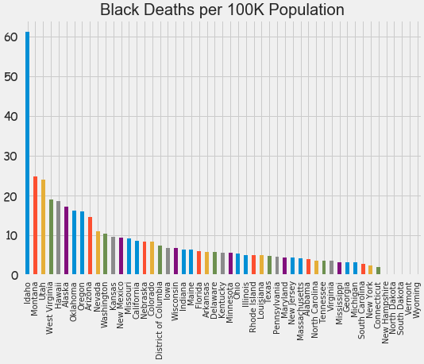
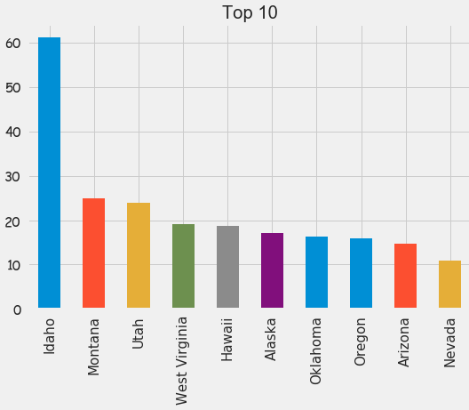
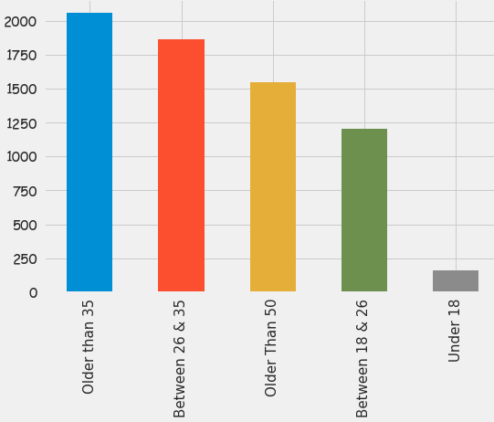

Fatal Law Enforcement Encounters
Data contains encounters with law enforcement that led
to a death in the United States from 2013 - 2018
Introduction:
- High Level Stats
- 6,833 people passed away
- Avg Age is 37
- Max Age 107
- Min Age is 1
- Questions
- Have deaths been increasing year over year?
- Is there racial bias?
- Does age factor?
- Does where you live matter?
Overall, fatalities have increased 8% since 2013:


Race plays a factor:

- Native Americna's are almost 4x as likely to die compared to White people
- Black people are almost 2.5x as likely to die compared to White people
Black people are at the highest risk when looking at the unarmed population:
Overall, state appears to have no influence:
7 out of the top 10 states for a black person are on the West Coast:
-

-

White, Hispanic and Native American people spike around age 35 while black people spike around 25:
-
